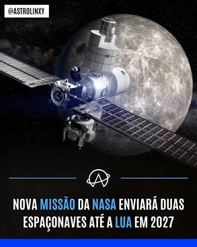
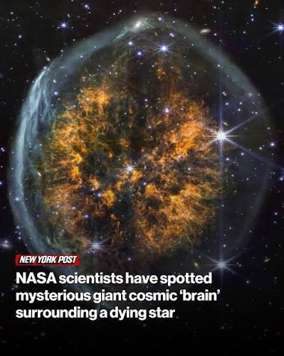
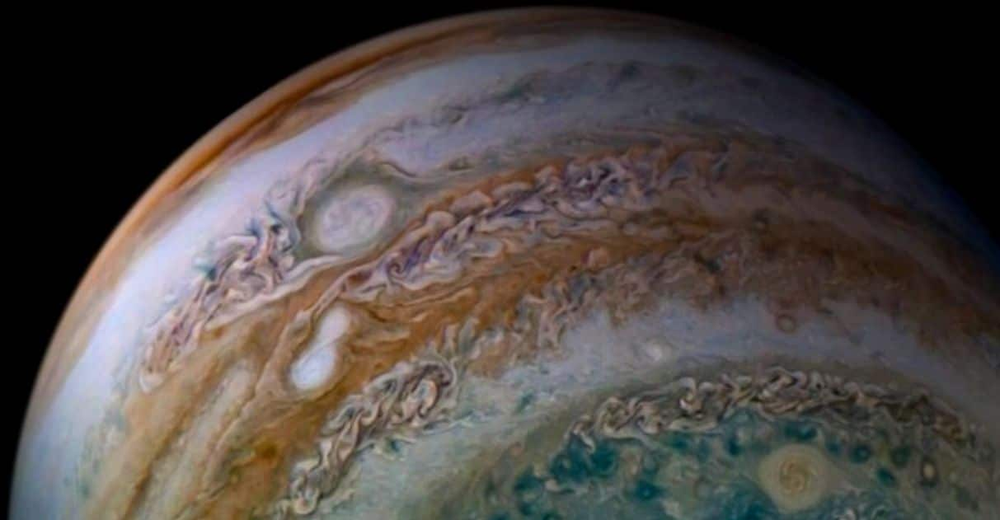

Últimas Novidades
Acompanhe os lançamentos mais recentes, descobertas científicas e comunicados oficiais da agência.
Ver Artigos RecentesNovidades


Artigo mais recente públicado:
A caracterização espectroscópica avançada de exoplanetas gasosos do tipo Júpiter quente tem revelado dados cruciais sobre a termodinâmica de mundos submetidos a regimes de radiação extrema. Através da espectroscopia de transmissão obtida por observatórios espaciais, pesquisadores monitoram a diminuição no fluxo de fótons das estrelas hospedeiras durante o trânsito fotométrico, isolando a luz que filtra pelo terminador planetário. Esse método fornece uma assinatura direta dos componentes químicos gasosos na alta atmosfera, revelando corpos celestes com volumes severamente inflados e densidades médias surpreendentemente baixas. Para sustentar um raio tão expandido contra as forças de contração gravitacional, torna-se necessária a injeção contínua de mecanismos de aquecimento anômalo, como a dissipação de maré e a dissipação ôhmica gerada por ventos atmosféricos hipersônicos. Adicionalmente, as curvas de luz no infravermelho próximo confirmam a presença de bandas de absorção de vapor d'água e monóxido de carbono, permitindo calcular a razão carbono-oxigênio e rastrear a origem do planeta na nebulosa protoestelar. Ao mesmo tempo, a radiação ultravioleta da estrela hospedeira bombardeia continuamente o topo dessas atmosferas estendidas, desencadeando um processo severo de fotoevaporação que gera uma cauda de escape hidrodinâmico de gás ionizado pelo espaço. O mapeamento dessa perda de massa fornece os parâmetros empíricos necessários para calibrar os modelos globais de circulação atmosférica, consolidando esses gigantes inflados como laboratórios essenciais para a física de plasma e para a modelagem climática em escala cosmológica.
